Designed and deployed an LLM-based application that analyzes YouTube video comments to extract audience sentiment and key discussion topics. The project combines OpenAI's API, text preprocessing, and front-end deployment to deliver real-time insights into viewer feedback.
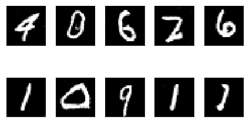
Built and trained a Generative Adversarial Network (GAN) to create realistic handwritten digits inspired by the MNIST dataset. Combined a generator and a discriminator in a competitive framework, showcasing progressive improvements in image quality through training.
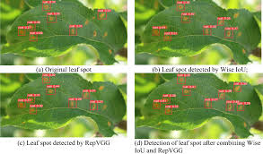
Built and deployed an object detection model using TensorFlow. The project covers the full pipeline from training to real-time inference, including model optimization and deployment in a production-ready environment. Demonstrates practical skills in both computer vision and end-to-end deployment.
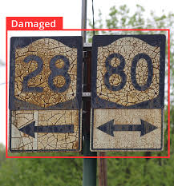
Developed a Convolutional Neural Network (CNN) to classify traffic signs using the GTSRB dataset. The project focused on preprocessing, data augmentation, and training a deep model for accurate warning sign detection under real-world conditions, supporting autonomous driving systems.
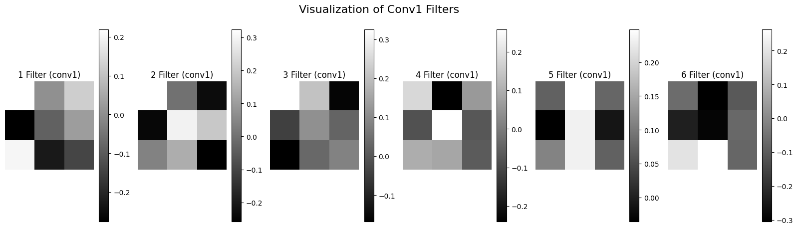
Explored the inner workings of Convolutional Neural Networks (CNNs) using PyTorch. Focused on visualizing weights, activations, and architecture behavior to gain a deep understanding of how CNNs learn. This project reflects a strong emphasis on model interpretability and low-level control with PyTorch.
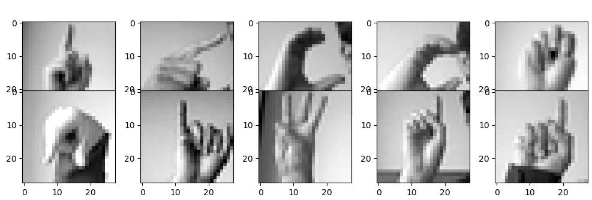
Fine-tuned a pre-trained MobileNet model to classify handwritten digits from the MNIST dataset. Leveraged MobileNet's efficient architecture to achieve high accuracy with minimal training time, highlighting the effectiveness of transfer learning in computer vision.
Developed a deep learning model using CNNs to recognize emotions from facial images. Focused on preprocessing, overfitting mitigation, and tuning for robust performance.
Built a sentiment analysis model using Hugging Face Transformers, focusing on fine-tuning, tokenization, and optimization for accurate text classification.
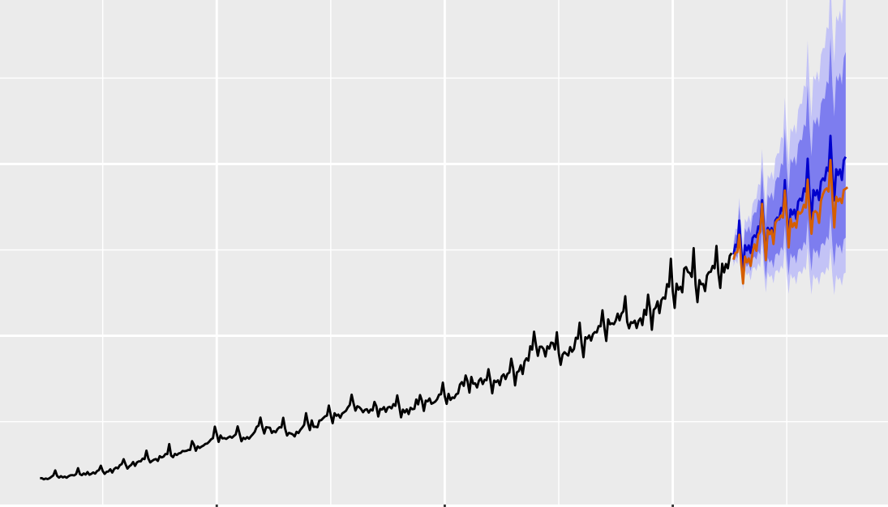
Implemented ARIMA modeling for forecasting time series data. Included stationarity tests, hyperparameter tuning, and performance evaluation on real-world datasets.
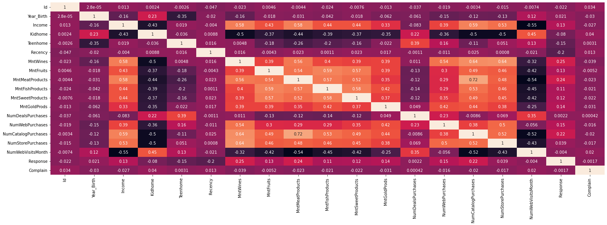
Analyzed marketing data, engineered features, and trained ML models to predict customer behavior and optimize campaign strategies in a full pipeline project.
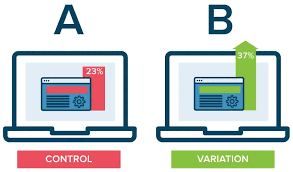
Performed rigorous AB tests with proper experiment design, statistical validation, and actionable business insights using confidence intervals and hypothesis testing.
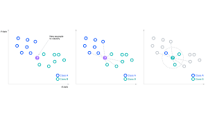
Implemented KNN from scratch with optimized distance metrics, algorithm logic, and performance validation on multiple datasets. Highlights algorithmic thinking and ML fundamentals.
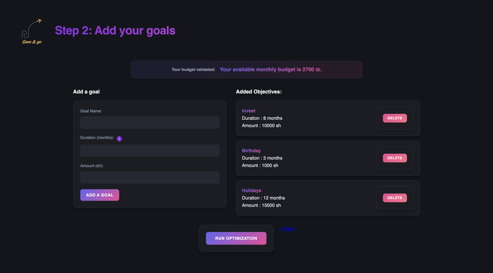
Co-developed a full web application to help users plan and optimize their savings for future goals. The platform calculates how much to save monthly based on income, expenses, and target deadlines, providing a personalized financial planning experience.
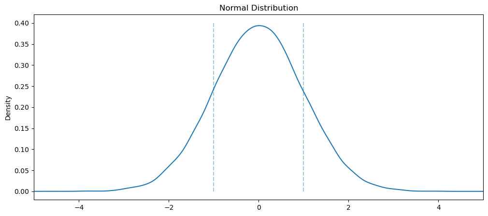
Developed a hands-on notebook to explore and visualize key probability distributions using Python. This project aims to build a solid statistical foundation by explaining concepts through intuitive plots and real-world simulations